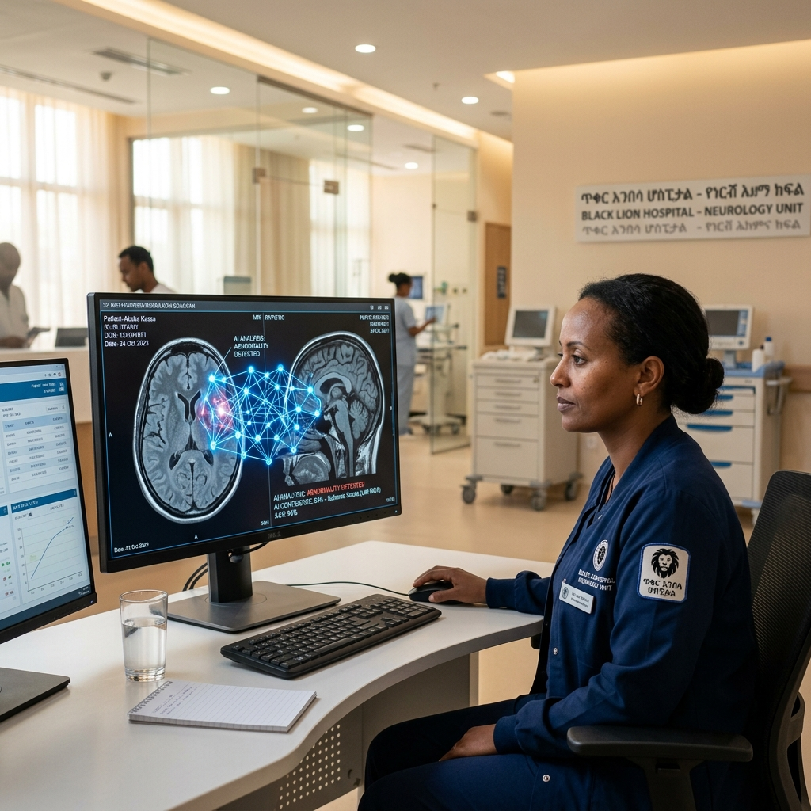

AI in Radiology
The Role of AI in Addressing Ethiopia's Radiologist Shortage
Artificial intelligence is not just a buzzword; it's a critical tool in our mission to bridge the healthcare gap. Discover how AI-powered worklists and diagnostic aids can amplify the impact of our expert radiologists.
Read More